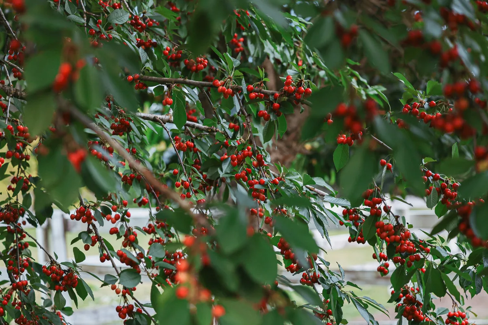
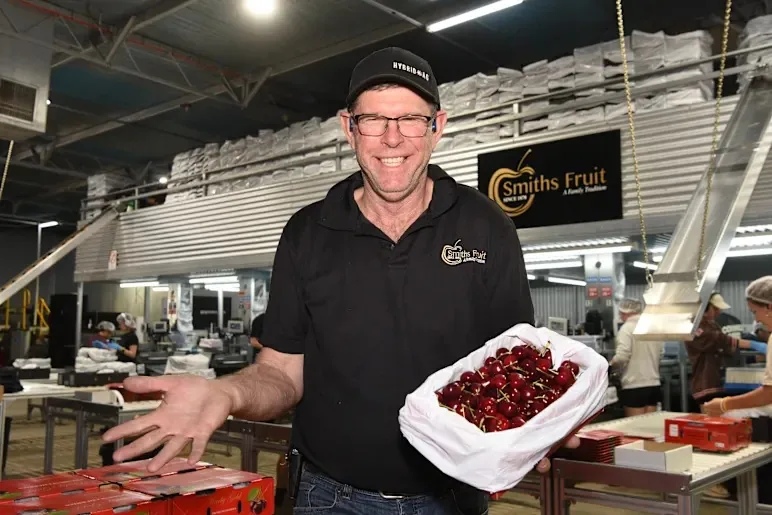

Request your free cherry audit.
Share the soil, leaf, sap, water or fruit results you already have. We review them alongside the block’s history and discuss the priorities with you. The review of existing data is free. If new laboratory testing would help, we explain the scope and cost first.

What does the free review include?
We interpret the results you already have and identify priorities for the block. You can then discuss the findings with a grower-agronomist who understands the cherry season.
We review your results
Send the results you have, including the sampling details. We review them alongside crop stage and block history, then identify any patterns or missing information that need follow-up.
We identify priorities
We explain what the current results support, whether another sample is needed and what to check next.
Talk it through with the team
Discuss the findings and practical next steps with the agronomist reviewing your results.
How the review works.
Start with the results you have. We explain what they show and discuss the next step. If another test is needed, we explain why before any work goes ahead.
Tell us about your block.
A short description is enough to start. Your varieties, district, crop stage and available results help us direct the request to the right person.
Already have soil, leaf, sap, water or fruit results? This form does not upload files. After sending your request, email useful results or photos to support@hybridag.com.au and include your HAL reference if one is shown.
The team will contact you.
Send the form and Jamie, our Sales Manager, gets in touch to understand the block, then connects you with the right agronomist. For cherries, that may be Andrew.
Existing-data review first
The free audit covers review of existing data. New laboratory testing, sampling or product supply is quoted separately and only proceeds with your approval.

Already have test results? Start with a review.
Request your free cherry audit →Discuss what your cherry block needs next.
The review of existing data is free. If new testing would add value, we explain the scope and cost before you decide.